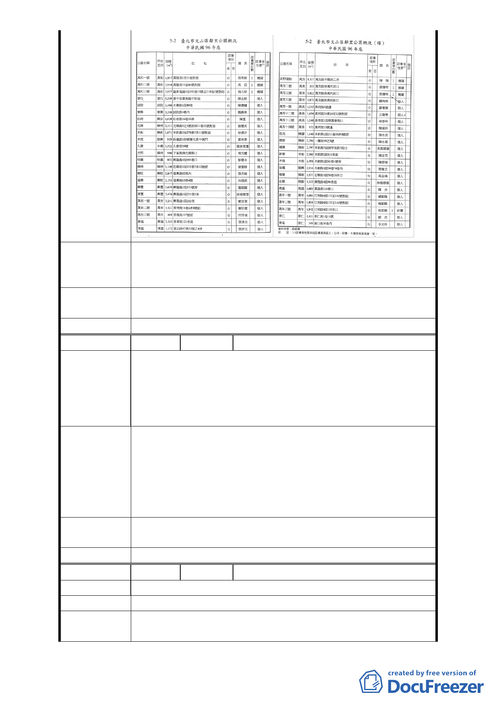

懇切建議應考量當地里民人數、需求與整體景觀，若無法
建 議 辦 法 擴增，起碼應保留原有公園預定地設置，以為闢建公園之
用。
專案小組審
查結論
同陳情案 1
委員會決議 同陳情案 1
編
號6
陳情人 陳玲芳、蔡昆明、蔡周來春等 3 人
1. 本案不應規劃為住宅區，其住三區之規劃地點緊鄰景美
溪堤防，其建築物施工將影響堤防安全。
陳 情 理 由 2. 本案堤外道路連接道南抽水站及附近排水閘門，具有防
汛功能，惟道路兩旁目前停車量大幅增加，會車困難，
恐影響防汛功能。
1.徵收原規劃住三地區(A1、A2、A3)，將面積較小之A1、
A2、B1設為公園，面積較大者(A2)可依都市計畫法設立
建議辦法
停車場。
2.於道路特定區域劃定紅線，禁止停車，並實施拖吊，除可
確保堤防安全、防汛功能外，亦可藉停車費、拖吊費增加
市府收入。
專案小組審
查結論
同陳情案 1
委員會決議 同陳情案 1
編
號7
陳情人 潘海天
陳 情 理 由 現住戶現有之安寧及安全環境，應予維護並保障之。
建 議 辦 法 維持第三種住宅區用地及原公園用地範圍。
專案小組審
查結論
同陳情案 1
- 11 -